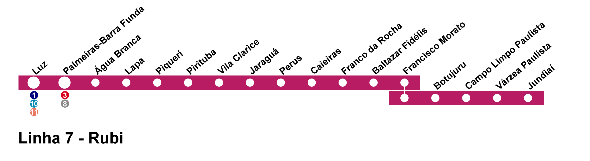

|
História | Lazer | Educação | Saúde e Segurança | Shopping Tietê Plaza |
|
|
História | Lazer | Educação | Saúde e Segurança | Shopping Tietê Plaza |


Pirituba é um distrito localizado na Zona Noroeste de São
Paulo capital, que possui diversos bairros menores dentro dele. Esse
distrito possui 17,1 km² e tem cerca de 165 mil habitantes (2010), sendo
sua densidade demográfica de 96 habitantes por km².
[1]
Muitas pessoas acreditam que Jaraguá está localizado em
Pirituba, e essa confusão acontece porque a Subprefeitura que toma conta
de ambos os municípios e de São Domingos também é a mesma, que é regida
pela Lei nº 13. 999, de 01 de Agosto de 2002 e tem o subprefeito Ronaldo
Ligieri que esta em mandato desde 05 de Maio de 2022 (Subprefeitura de
Jaraguá-Pirituba-São Domigos). Os três distritos juntos representam 54,7
km², habitada por mais de 400 mil pessoas. [2]
O bairro de Pirituba é majoritariamente formado por famílias, e embora seja bem diversificado, a maior parte da população se enquadra na classe média. Em Pirituba, existem bairros mais ricos que variam entre médio e alto padrão, com uma boa estruturação, mais árvores, ruas largas e melhores asfaltadas; essa concentração de moradores de classe média e média alta fica nos entornos da Rodovia Bandeirantes e da Marginal Tietê. Por outro lado, existem bairros muito pobres, com diversas comunidades mais necessitadas, onde as ruas são estreitas e emburacadas, pouca arborização e classe social entorno de baixo e médio baixo, por exemplo Vila Zat e Vila Mirante. [3]
Durante 2000 e 2010, o distrito passou por mudanças
urbanísticas, as quais aumentaram a quantidade de condomínios e
edifícios residenciais voltados às classes média e média alta,
especialmente no Jardim Íris, que também ganhou o Tietê Plaza Shopping
no ano de 2013 e tornou-se verticalizado. [4]
Pirituba está na 54° posição dentre os bairros da cidade de
São Paulo no quesito IDH, com 0,841 em uma escala de 0 a 1, sendo assim
considerado elevado. A região apresenta boa infraestrutura, facilidade
no acesso a informações, saneamento, transporte público, segurança,
saúde e qualidade de vida em um geral, por conta disso, recentemente, o
bairro passou por uma valorização imobiliária, aumentando o valor do
metro quadrado, que passou a girar em torno dos R$ 6.640,00.
[5]
Uma grande característica do bairro é sua extensa variedade de meios de transporte público. Em relação ao trem, existem duas linhas que pertencem a essa região, sendo Piqueri e Pirituba na linha 7 rubi; as duas tem conexão direta para a estação Barra Funda, e a partir dela é possível utilizar diversas linhas metrô. Além disso, a linha 6 do metrô localizada na Vila Clarice também pertence a região. [6]
Além disso, o bairro ainda possui um terminal de ônibus, o Terminal Pirituba. Ele é muito importante para São Paulo, porque possui linhas ligando o distrito a diversos lugares como Lapa, Pinheiros, Itaim Bibi, Vila Olímpia, Vila Mariana, Jaraguá, entre outros. [7]